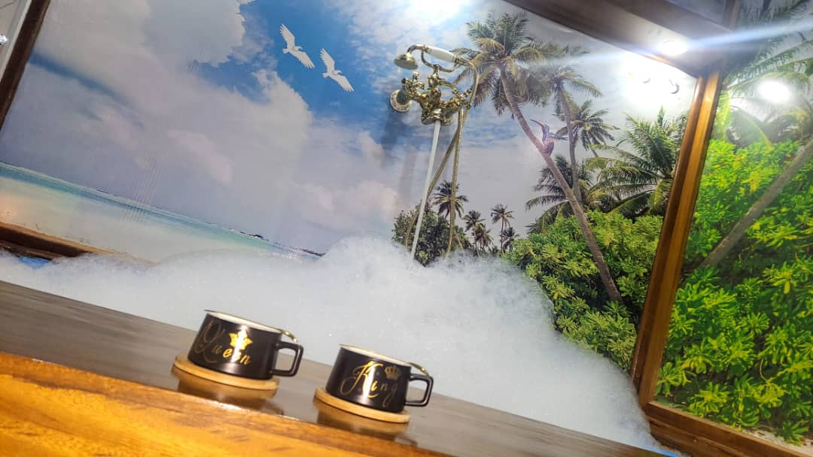

About Isoko Life Center
A trusted wellness center in Kigali supporting natural health, bodywork, counseling, consultations, and quality wellness products since 2013.
A Kigali Wellness Center Built on Experience and Care
Isoko Life Center has helped many people pursue better wellbeing through practical guidance, natural wellness support, and personal care.
The center was founded by people with experience from different health institutions, including hospitals and clinics. They combined knowledge, effort, and commitment to support healthier living.
Isoko Life Center opened in 2013 around the area commonly known as Cya Mutzig in Remera, administratively in Kanombe Sector, and continues to serve clients there today.
Wellness Concerns We Help Clients Navigate
The center offers support and guidance without replacing qualified medical care, especially for complex or urgent health concerns.
Back and Nerve Wellness
Support for common back, nerve, and body comfort concerns through consultation, bodywork, and lifestyle guidance.
Reproductive Health Support
Respectful wellness guidance for reproductive health concerns, with referral to qualified care when needed.
Skin Wellness Concerns
Cautious natural-care guidance for skin wellness concerns and everyday skin support.
General Wellness and Lifestyle
Practical support for nutrition, movement, stress, and daily habits that help clients maintain wellbeing.
Multiple Paths Toward Better Wellbeing
Isoko Life Center combines different wellness approaches based on each client's needs and refers complex cases when specialist care is appropriate.
Herbal and Plant-Based Wellness Support
Guidance around herbs, plants, and natural wellness practices that may support healthier daily living.
Massage and Reflexology
Bodywork support for relaxation, mobility, and general wellness concerns.
Nutrition and Sport/Lifestyle Guidance
Practical guidance for food choices, movement, and lifestyle habits that support wellbeing.
Counseling and Trauma-Healing Support
Respectful support for emotional wellbeing and healing from difficult experiences.
Consultations and Referrals
Consultations help guide next steps, including referrals to specialists when a case needs additional expertise.
A Real Wellness Environment
Clients are welcomed into a calm physical space for consultation, massage, reflexology, and natural wellness support.


Working With Specialists When Needed
Isoko Life Center works with hospitals, clinics, research institutions, and specialists in Rwanda and beyond. This helps the team continue learning and helps connect clients to specialists for complex cases when needed.
Begin With a Conversation
Book a consultation to discuss your wellness needs and the kind of support that may be appropriate for you.